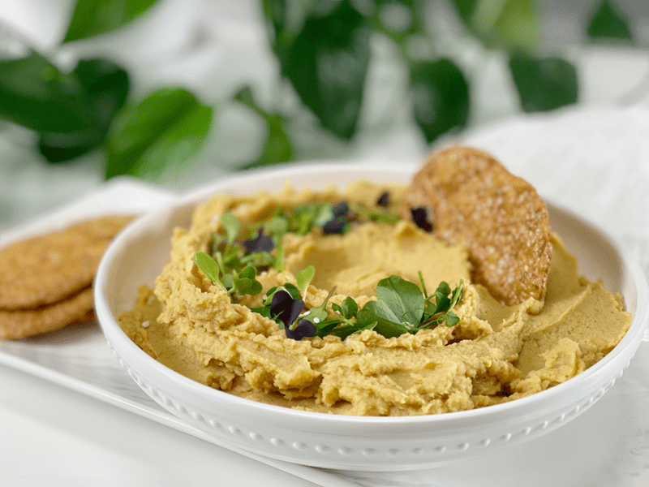
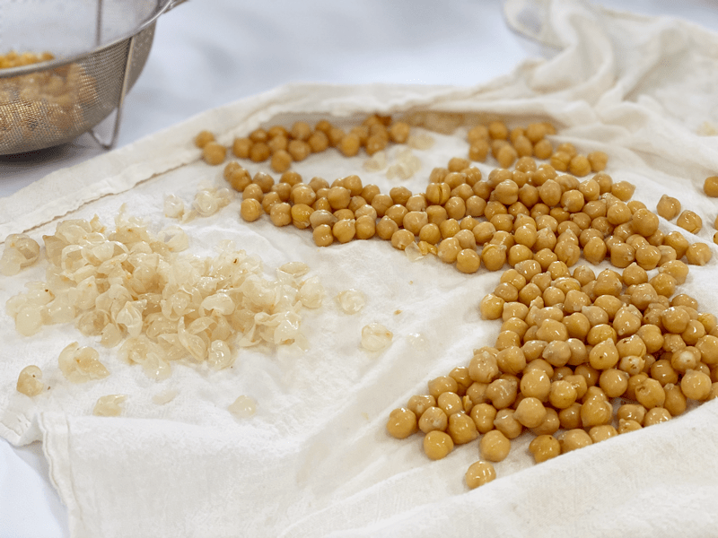
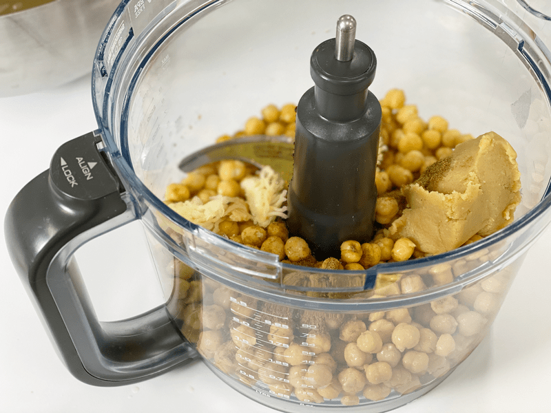
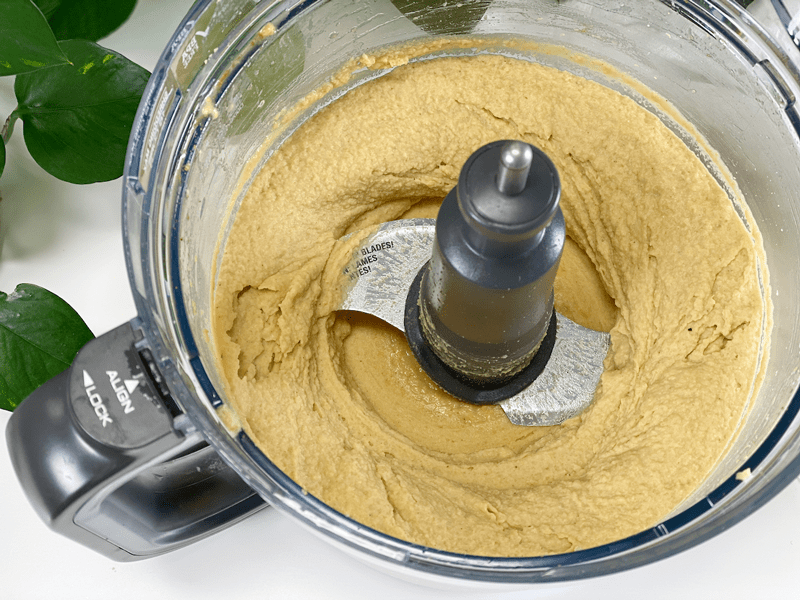
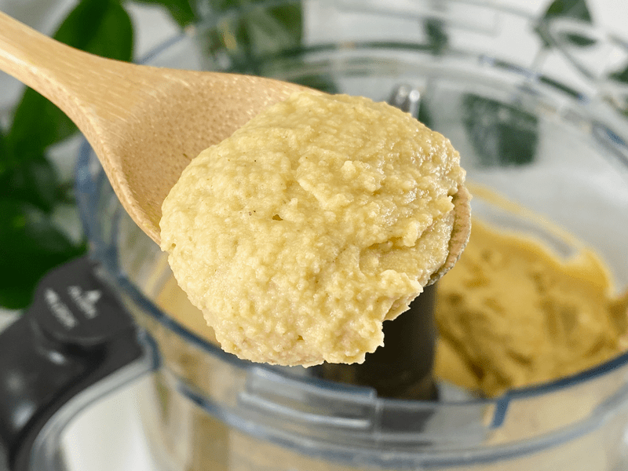
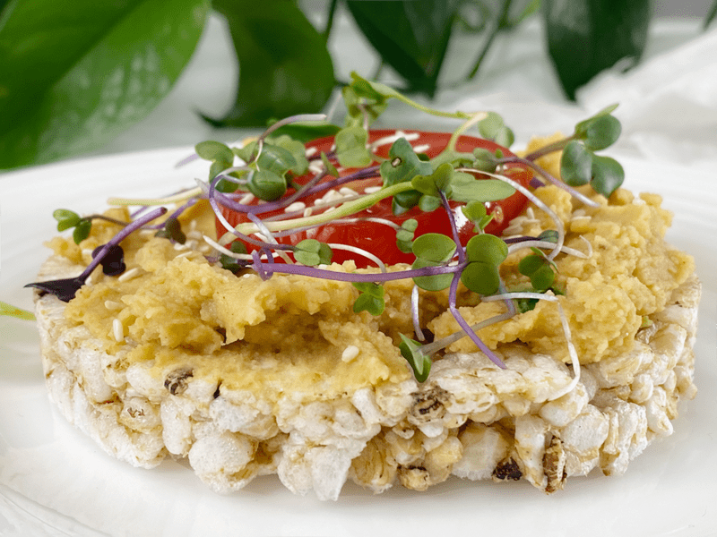

Hummus | Oil-Free | Tahini-Free | Say What?
Today, I created an oil-free, tahini-free hummus that knocked my socks off. Even Bob was walking around barefoot after indulging in a serving or two or three. Hummus has a unique taste, and interesting enough, it tastes nothing like chickpeas (which is the core ingredient). It’s the added ingredients that make this dip shine. Since I left out two of the most common elements, tahini, and oil, I had to get creative and add what I refer to as my “secret weapon.” This hummus is packed full of flavor that will instantly create a healthy addiction. The garlicky smooth, creamy texture melts in your mouth, and the taste will linger on your tongue.

To keep this recipe low-fat and oil-free, I decided to use white chickpea miso in place of tahini butter. It gives the hummus a “fermented umami-rich edge,” which is pretty spot-on: it’s bold. I found that by adding the miso to the hummus, I didn’t even miss the traditional tahini. If you want, you can drizzle the standard olive oil or toasted sesame oil on top, but I found that it wasn’t necessary.
Making exceptional hummus at home is one of those pleasures with a high payoff that is so worth fitting into your regular cooking regime. Just like making your own yogurt, it’s satisfying and economical. I will admit I had an itsy-bitsy teeny-weeny bit of doubt that this wouldn’t turn as expected, I mean really…no tahini, no oil? BUT it delivered beyond my expectations, and it was tough to stop eating. There is NOT one thing that I would change, nor do I feel the need to tinker around with another hummus recipe, unless I make a flavored one, like with roasted red peppers, etc.
Just as I was finishing up the hummus, Bob walked into the studio. “Whatcha doing? he asked. “Making hummus–are you hungry?” I responded. “Ah,” he said. “What to try a BITE?” I asked. “Nah, later,” he said. “Okay,” I responded. I went into the house to use the bathroom and came back to this (second photo). Hmm, not hungry? Good thing I snapped a few pictures before he got to it!
Ingredient Run-Down
Chickpeas (garbanzo beans)
- Chickpeas are a sweet and nutty legume that becomes incredibly creamy when blended.
- Reserved chickpea liquid (aquafaba) when making hummus. I like to add it towards the end, based on the consistency I am aiming for. It adds a creaminess that you just don’t get from water.
- If at all possible, use home-cooked chickpeas. The process is super simple, and it just takes a little preparation. You can tell the difference between using canned or homemade.
White Chickpea Miso
- I use Miso Master Organic Chickpea Miso, which I can readily purchase from our local grocery store. It is unpasteurized; therefore, you can find it in the refrigerated section of the store. It has a shelf life of about 18 months.
- It is soy-free, using garbanzo beans (chickpeas) instead of soybeans as its base.
- It has less salt than traditional miso, with a mild salty-sweet taste, giving a dish that fermented umami-rich edge.
- Chickpea miso is an excellent source of zinc, vitamin K, copper, and manganese. Because of the fermentation, it also provides loads of beneficial bacteria for the digestive system.
Fresh Garlic
- Look for firm heads, and take a minute to run them through the garlic press before tossing them into the mix. Otherwise, large chunks can hide in the dip and it may not be too pleasurable to bite into…unless you are a bona fide garlic lover.
- If there is a green sprout inside, remove it. The sprout is a signal that the garlic has some age on it. The clove is still fine to eat, but the sprout imparts unappealing, unacceptable raw-garlic heat.
- I used frozen whole garlic cloves since we are preserving certain foods to make them last longer during the COVID-19 pandemic.
- Garlic can give a recipe a “heat” (not temperature-wise), so start with one clove and work up.
Coconut Aminos (Soy Sauce)
- A tiny, tiny splash of soy sauce replaces some of the umami missing without the olive oil.
- Coconut aminos is similar in color and consistency to light soy sauce, making it a natural substitute in recipes. It’s not as rich as traditional soy sauce and has a milder, sweeter flavor. It’s lower in salt than soy sauce and free of common allergens, including gluten and soy.
- Feel free to use any soy sauce version that you have on hand.
Troubleshooting Your Hummus
“My hummus is grainy-tasting.”
- If you enjoy a velvety-smooth hummus, remove the skins from the chickpea kernels after cooking (or after opening the can). This process can take 10-15 minutes; use it as an active meditation. Those skins are the cause of grainy hummus, and they dampen flavor. If you own a Vitamix and the tamper, you can use that to create a smooth and creamy hummus (no need to remove skins then).
- If you cook your own chickpeas, make sure that they have cooked long enough. Undercooked chickpeas will lead to a grainy hummus.
- If you use canned chickpeas, make sure they are of good quality. I find that many generic brands supply grainy chickpeas.
- Add more liquid–blend the recipe as instructed, and if you still feel that it is too thick, add 1 tablespoon of liquid at a time, making sure not to add too much, which is much harder to fix.
- Blend longer. Often, we get impatient and stop blending too soon. Food processors have different horsepower, so some machines will blend quicker while others need more time.
“My hummus is too thin.”
- This happens when you add too much liquid too soon. The only way to remedy this is to add more chickpeas. Blend them in and give it a taste; you may need to add a bit more spice since you increased the chickpea volume.
“My hummus is too garlicky.”
- Garlic can be tricky because, like peppers, you never quite know how “hot” they are going to be until you use them.
- Overuse can create bitterness in a recipe. The most natural solution is to dilute the dish that you are making.
- Raw garlic reacts differently than cooked garlic. If you enjoy garlic but struggle with it in its raw form, cook the garlic at temperatures above 140 degrees (F), to deactivate alliinase, and mellow out an overpowering garlic flavor. Then add it to the recipe.
- Fresh herbs like cilantro, parsley, and basil can help to counteract the flavor of excess garlic; however, you will want to use them in moderation. Too much can make a dish bitter. Add your herbs in small amounts and taste after each addition.
- The tartness of lemon or even vinegar can draw attention away from garlic’s intensity. The key is to use it in moderation to keep from making your dish too sour.
- Sugar (sweeteners) can also calm the heat of garlic, but I don’t find this principle applicable in this recipe. Just good to know in general.
I hope you enjoy this recipe. Please leave a comment below and may the rest of your day be filled with joy. amie sue
 Ingredients
Ingredients
Yields 2 1/2 cups
- 2 (15 oz) cans or 2 1/2 cups chickpeas, peeled
- 1/4 cup white chickpea miso
- 3 cloves garlic, minced
- 2 Tbsp fresh lemon juice
- 2 tsp ground cumin
- 2 tsp coconut aminos
- 1/4 cup water or vegetable broth
- Drain the chickpeas, reserving the liquid from the can or homemade batch.
- If, after blending, you find that you need to thin the hummus, add 1 Tbsp of aquafaba (chickpea liquid) at a time until it reaches the consistency that you are aiming for.
- In a food processer, fitted with the “S” blade, combine the chickpeas, miso, garlic, lemon juice, cumin, coconut aminos, and vegetable broth. Puree to a texture that you like, chunky or extra smooth.
- Stop the machine, remove the lid and scrape down the sides of the bowl as needed to integrate any large chunks.
- Taste the hummus and add more miso paste if desired. (Some brands of miso paste are powerful and/or salty, so start with less.)
- Serve with cut vegetables, rice crackers, use as a spread on your next sandwich, and so forth.
- Hummus will keep in an airtight container in the fridge for up to 2 weeks.
-

-
I highly recommend taking the extra 15 minutes to remove the chickpea skins.
-

-
Place all of the ingredients into the food processor…
-

-
Blend until creamy or to the texture you prefer.
-
-

-
Just a lovely close-up to show the texture I was aiming for.
-

-
Mid-afternoon snack: rice cake with hummus, fresh slice of a garden tomato and micro greens. Delicious combination.
© AmieSue.com